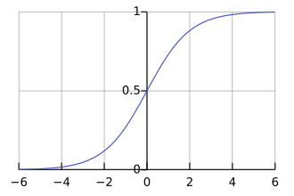
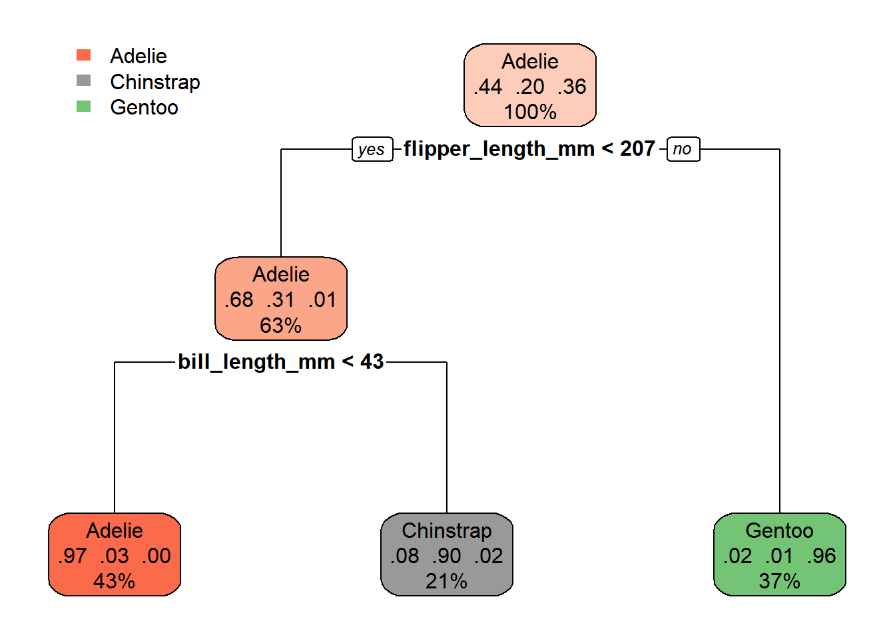

Neste capítulo, vamos aplicar os conceitos de Machine Learning (ML) em R usando o ecossistema tidymodels. Começaremos com dados simples e sintéticos para entender a lógica por trás dos modelos de classificação, e depois aplicaremos esses mesmos conceitos a um conjunto de dados mais realista.
5.1 Conceitos importantes ao aplicar um modelo de Aprendizado de Máquina
Sobreajuste (Overfitting) e Subajuste (Underfitting): O sobreajuste acontece quando o modelo “memoriza” os dados de treinamento em vez de aprender a generalizar os padrões, falhando em novos dados. O subajuste acontece quando o modelo é muito simples e não consegue capturar nem mesmo os padrões básicos nos dados.
Dados de treino e dados de teste: Para avaliar se o modelo está generalizando bem, a base de dados é dividida. O modelo é treinado com a maior parte dos dados (dados de treino) e depois é avaliado em uma porção que ele nunca viu antes (dados de teste).
Viés versus variância: O viés é o erro que o modelo comete por ser muito simples (subajuste). A variância, neste contexto, reflete a grande variação dos parâmetros estimados de um modelo a pequenas variações nos dados de treinamento (sobreajuste). Encontrar o equilíbrio entre os dois é crucial. Vale ressaltar que o termo “variância” geralmente reflete o sentido estatístico (uma medida de variação dos dados em relação à média dos dados).
Métricas de avaliação: São usadas para medir o desempenho do modelo nos dados de teste. Dependendo do problema, podem ser usadas métricas como acurácia (a proporção de previsões corretas), precisão e revocação.
5.2 Como funcionam os modelos de classificação?
O objetivo de um modelo de classificação é prever a qual categoria (ou “classe”) uma observação pertence. Diferente da regressão, que prevê um valor numérico contínuo, a classificação trabalha com rótulos discretos, como A ou B, doente ou saudável ou espécies de pinguins, que estudamos no capítulo anterior.
A ideia geral da modelagem é encontrar uma função matemática que use as características dos nossos dados (as variáveis x e y no nosso exemplo, ou as medidas do pinguim) para prever a classe. O processo de “treinamento” é exatamente onde o modelo “aprende” a melhor função para realizar essa tarefa.
Para fazer isso de forma confiável, é crucial aplicar os conceitos de divisão de treino e teste, viés e variância e métricas de avaliação, que foram explicados no Capítulo 1. O objetivo é evitar o sobreajuste, garantindo que o modelo não apenas memorize os dados de treino, mas também seja capaz de generalizar e fazer boas previsões em dados novos.
Veremos dois modelos de classificação neste minicurso.
5.2.1 Modelo Logístico
A Regressão Logística é um modelo de classificação que pertence à família dos Modelos Lineares Generalizados. Esses modelos “generalizam” a ideia da regressão linear para lidar com variáveis de resposta que não seguem uma distribuição normal ou que não são contínuas.
A princípio, a regressão logística foi desenvolvida para problemas de duas classes (também conhecidos como classificação binária). Nesses casos, o objetivo é estimar a probabilidade (p) de um dado pertencer a uma das classes com base em suas características. Como a variável de resposta é binária (o evento acontece ou não), sua distribuição de probabilidade é de Bernoulli. Por não ser uma distribuição normal, ela requer um modelo linear generalizado, e a função de ligação canônica para esse caso é o modelo de Regressão Logística. Essa função de ligação, chamada logit, é a ponte matemática que transforma a regressão linear em uma probabilidade.

Observemos que a função logística leva os valores reais para valores entre 0 e 1.
Apesar de ter a palavra “regressão” no nome, seu propósito é a classificação.
O modelo funciona encontrando a melhor linha reta (ou um plano, em mais dimensões) que separa as classes. Ele não prevê a classe diretamente, mas sim a probabilidade de uma observação pertencer a uma determinada classe. Por exemplo, pode prever que um ponto tem 90% de chance de ser da Classe A e 10% de ser da Classe B.
Se a probabilidade calculada for superior a 50%, o modelo classifica a observação em uma classe; caso contrário, na outra. Isso torna a fronteira de decisão (o lugar onde a probabilidade é exatamente 50%) uma linha reta, como veremos a seguir.
Essa abordagem também pode ser estendida para problemas com múltiplas classes (três ou mais) através da Regressão Logística Multinomial, que irá criar segmentos de reta para separar as diferentes classes.
5.2.2 Árvore de Decisão
A Árvore de Decisão é um modelo de classificação mais intuitivo e poderoso, que não se limita a fronteiras de decisão lineares. Ela opera fazendo uma série de perguntas sobre os dados, uma após a outra. Cada “pergunta” (nó da árvore) divide o conjunto de dados em subconjuntos menores e mais homogêneos. Por exemplo, a primeira pergunta pode ser: “A massa corporal é maior que X gramas?”. Dependendo da resposta, o modelo faz uma nova pergunta para refinar a classificação.
A “escolha” das perguntas é baseada em um critério de informação, calculado por medidas como a Entropia da Informação ou o Índice de Gini. A ideia é que cada nó seja o máximo em relação ao ganho de informação, ou seja, que a divisão seja a mais eficaz possível para separar as classes.
O resultado é uma estrutura em forma de árvore, onde cada nó final (folha) representa uma classe. A Árvore de Decisão é excelente para capturar relações complexas e não-lineares, pois sua fronteira de decisão é uma série de segmentos de reta, e não apenas uma única linha.
No entanto, a natureza de dividir os dados em pequenos subconjuntos faz com que a árvore de decisão tenha uma inclinação para o sobreajuste. Para evitar que o modelo “memorize” os dados de treino, são necessárias técnicas de regularização como o poda (pruning) e a definição do número máximo de divisões. Modelos que utilizam múltiplas árvores, como a Floresta Aleatória, também surgiram como uma solução para essa limitação.
5.3 Classificação em dados simples
Vamos começar gerando um conjunto de dados bidimensional simples que pode ser separado por uma linha reta. Isso nos permitirá visualizar claramente como um modelo de regressão logística funciona.
# 1. Gerar dados sintéticos para duas classes# Os dados da classe A são gerados por: y = -2 * x + 5 (com algum ruído)# Os dados da classe B são gerados por: y = -2 * x + 6 (com algum ruído)set.seed(42)n_obs <-1000data_class_a <-tibble(x =rnorm(n_obs, mean =2, sd =1),y =-2* x +5+rnorm(n_obs, mean =0, sd =1)) %>%mutate(classe ="A")data_class_b <-tibble(x =rnorm(n_obs, mean =4, sd =1),y =-2* x +6+rnorm(n_obs, mean =2, sd =1)) %>%mutate(classe ="B")# Unir os dataframes e misturardados_simulados <-bind_rows(data_class_a, data_class_b) %>%sample_frac(1)head(dados_simulados)
# A tibble: 6 × 3
x y classe
<dbl> <dbl> <chr>
1 3.33 -0.793 A
2 5.29 -0.231 B
3 5.44 -2.31 B
4 2.27 0.226 A
5 2.85 2.13 B
6 1.46 3.33 A
Um ponto imporante aqui, vamos realizar o comando glimpse() para entender melhor a estrutura dos dados.
Observemos que a variável classe é do tipo character. Para que o modelo de classificação funcione corretamente, precisamos convertê-la para o tipo factor. Façamos então:
Rows: 2,000
Columns: 3
$ x <dbl> 3.3349126, 5.2911413, 5.4366347, 2.2736953, 2.8548681, 1.464412…
$ y <dbl> -0.7925305, -0.2313488, -2.3086814, 0.2255405, 2.1270237, 3.326…
$ classe <fct> A, B, B, A, B, A, B, A, B, A, A, B, B, A, A, B, B, B, B, A, A, …
Agora sim, a variável classe está como factor, o que é essencial para o modelo de classificação.
Para entender melhor os dados que acabamos de criar, vamos visualizá-los. O gráfico a seguir mostra a distribuição dos pontos no plano cartesiano. Podemos ver que as duas classes formam dois “aglomerados” distintos.
Nesse próximo gráfico, podemos observar cada uma das classes sendo representadas por uma cor. De fato, a diferença de aglomerados visto no gráfico anterior sugere a diferença entre os dois grupos.
ggplot(dados_simulados, aes(x = x, y = y, color = classe)) +geom_point(size =3, alpha =0.7)
5.3.1 Preparando os Dados para o Modelo
Antes de treinar o modelo, é uma prática essencial dividir o nosso conjunto de dados em dois subconjuntos: treino e teste.
O conjunto de treino é usado para “ensinar” o modelo a identificar padrões.
O conjunto de teste é usado para avaliar o desempenho do modelo em dados que ele nunca viu antes, garantindo uma avaliação mais realista.
# 2. Dividir os dados em treino e testesplit_simulado <-initial_split(dados_simulados, prop =0.7, strata = classe)train_simulado <-training(split_simulado)test_simulado <-testing(split_simulado)
dim(train_simulado)
[1] 1400 3
dim(test_simulado)
[1] 600 3
5.3.2 Treinando e Avaliando o Modelo de Regressão Logística
Agora, vamos usar a biblioteca tidymodels para construir, treinar e avaliar o nosso modelo de Regressão Logística, que é um algoritmo de classificação linear.
# 3. Treinar o modelo de regressão logística nos dados de TREINOmodelo_logistico_simples <-logistic_reg() %>%fit(classe ~ x + y, data = train_simulado)# Fazer previsões nos dados de TREINOpreds_train <-predict(modelo_logistico_simples, new_data = train_simulado) %>%bind_cols(train_simulado)
5.3.3 Visualizando a Fronteira de Decisão
A grande vantagem de usar dados sintéticos é que podemos visualizar a “fronteira de decisão” que o modelo encontrou para separar as duas classes. A Regressão Logística sempre encontrará uma linha reta para fazer essa separação.
# 5. Fazer previsões nos dados de TESTE}preds_test <-predict(modelo_logistico_simples, new_data = test_simulado) %>%bind_cols(test_simulado)# 6. Extrair os coeficientes para a reta de classificaçãointercept <- modelo_logistico_simples$fit$coefficients["(Intercept)"]coef_x <- modelo_logistico_simples$fit$coefficients["x"]coef_y <- modelo_logistico_simples$fit$coefficients["y"]# A reta de decisão é onde a probabilidade é 0.5, ou seja, -intercept = coef_x*x + coef_y*y# Isolamos 'y' para plotar a reta: y = (-coef_x/coef_y)*x - (intercept/coef_y)slope <--coef_x / coef_yintercept_line <--intercept / coef_y# 7. Visualizar os dados e a reta de classificaçãoggplot(dados_simulados, aes(x = x, y = y, color = classe)) +geom_point(size =3, alpha =0.7) +geom_abline(intercept = intercept_line, slope = slope, linetype ="dashed", size =1, color ="black") +labs(title ="Classificação Linear com Regressão Logística",subtitle ="A reta pontilhada é a fronteira de decisão do modelo",x ="Variável X",y ="Variável Y",color ="Classe" ) +theme_minimal() +theme(legend.position ="bottom")
Warning: Using `size` aesthetic for lines was deprecated in ggplot2 3.4.0.
ℹ Please use `linewidth` instead.
5.3.4 Avaliando o Desempenho do Modelo
Uma das ferramentas mais importantes para avaliar um modelo de classificação é a Matriz de Confusão. Ela mostra o quão bem o modelo classificou as amostras, comparando as classes previstas com as classes reais.
Verdadeiros Positivos (TP): Predições corretas da classe positiva.
Verdadeiros Negativos (TN): Predições corretas da classe negativa.
Falsos Positivos (FP): Erro tipo I. Predições incorretas da classe positiva.
Falsos Negativos (FN): Erro tipo II. Predições incorretas da classe negativa.
# 8. Calcular a matriz de confusãomatriz_confusao <-conf_mat(preds_train, truth = classe, estimate = .pred_class)matriz_confusao
Truth
Prediction A B
A 682 22
B 18 678
matriz_confusao_teste <-conf_mat(preds_test, truth = classe, estimate = .pred_class)matriz_confusao_teste
Truth
Prediction A B
A 283 8
B 17 292
autoplot(matriz_confusao_teste, type ="heatmap") +labs(title ="Matriz de Confusão (Dados de Teste)")
Além da matriz de confusão, podemos usar outras métricas para uma avaliação mais completa:
Acurácia (Accuracy): Proporção de predições corretas em relação ao total.
Precisão (Precision): A proporção de predições positivas que estavam corretas.
Recall (Sensibilidade): A proporção de casos positivos reais que foram identificados corretamente.
F1-Score: Média harmônica de Precisão e Recall.
accuracy(preds_test, truth = classe, estimate = .pred_class)
minhas_metricas <-metric_set(accuracy, precision, recall, f_meas)# Calcular e exibir as métricas nos dados de testeminhas_metricas(preds_test, truth = classe, estimate = .pred_class)
5.4 2. Classificação com Dados Não-Lineares (Árvore de Decisão)
E se os dados não puderem ser separados por uma linha reta? Vamos gerar um novo conjunto de dados onde as classes se “cruzam” e testar a Regressão Logística novamente, para então compará-la com um modelo mais flexível: a Árvore de Decisão.
5.4.1 Gerando Dados Não-Lineares
# 1. Gerar dados sintéticos para duas classesset.seed(42)n_obs <-1000data_class_a <-tibble(x =rnorm(n_obs, mean =4, sd =1),y =-2* x +16+rnorm(n_obs, mean =0, sd =1)) %>%mutate(classe ="A")data_class_b <-tibble(x =rnorm(n_obs, mean =4, sd =1),y =2* x +rnorm(n_obs, mean =2, sd =1)) %>%mutate(classe ="B")# Unir os dataframes e misturardados_simulados <-bind_rows(data_class_a, data_class_b) %>%sample_frac(1)head(dados_simulados)
# A tibble: 6 × 3
x y classe
<dbl> <dbl> <chr>
1 5.33 6.21 A
2 5.29 14.9 B
3 5.44 13.4 B
4 4.27 7.23 A
5 2.85 7.55 B
6 3.46 10.3 A
ggplot(dados_simulados, aes(x = x, y = y, color = classe)) +geom_point(size =3, alpha =0.7)
Perceba que as classes A e B não são separáveis por uma única linha reta.
5.4.2 Regressão Logística em Dados Não-Lineares
Agora, vamos tentar aplicar o mesmo modelo de Regressão Logística. A fronteira de decisão será uma linha reta, mas veremos que ela não conseguirá separar bem as classes.
# 2. Treinar um modelo de regressão logísticadados_simulados$classe <-as.factor(dados_simulados$classe)# 3. Dividir os dados em treino e testesplit_simulado <-initial_split(dados_simulados, prop =0.7, strata = classe)train_simulado <-training(split_simulado)test_simulado <-testing(split_simulado)
dim(train_simulado)
[1] 1400 3
dim(test_simulado)
[1] 600 3
# 4. Treinar o modelo de regressão logística nos dados de TREINOmodelo_logistico_simples <-logistic_reg() %>%set_engine("glm") %>%set_mode("classification") %>%fit(classe ~ x + y, data = train_simulado)# Fazer previsões nos dados de TREINOpreds_train <-predict(modelo_logistico_simples, new_data = train_simulado) %>%bind_cols(train_simulado)# 5. Fazer previsões nos dados de TESTEpreds_test <-predict(modelo_logistico_simples, new_data = test_simulado) %>%bind_cols(test_simulado)# 6. Extrair os coeficientes para a reta de classificaçãointercept <- modelo_logistico_simples$fit$coefficients["(Intercept)"]coef_x <- modelo_logistico_simples$fit$coefficients["x"]coef_y <- modelo_logistico_simples$fit$coefficients["y"]# A reta de decisão é onde a probabilidade é 0.5, ou seja, -intercept = coef_x*x + coef_y*y# Isolamos 'y' para plotar a reta: y = (-coef_x/coef_y)*x - (intercept/coef_y)slope <--coef_x / coef_yintercept_line <--intercept / coef_y# 7. Visualizar os dados e a reta de classificaçãoggplot(dados_simulados, aes(x = x, y = y, color = classe)) +geom_point(size =3, alpha =0.7) +geom_abline(intercept = intercept_line, slope = slope, linetype ="dashed", size =1, color ="black") +labs(title ="Classificação Linear com Regressão Logística",subtitle ="A reta pontilhada é a fronteira de decisão do modelo",x ="Variável X",y ="Variável Y",color ="Classe" ) +theme_minimal() +theme(legend.position ="bottom")
# 8. Calcular a matriz de confusãomatriz_confusao <-conf_mat(preds_train, truth = classe, estimate = .pred_class)matriz_confusao
Truth
Prediction A B
A 480 238
B 220 462
matriz_confusao <-conf_mat(preds_test, truth = classe, estimate = .pred_class)matriz_confusao
Truth
Prediction A B
A 204 114
B 96 186
autoplot(matriz_confusao, type ="heatmap")
Vamos ver algumas métricas, como acurácia, precisão, recall e F1-score.
accuracy(preds_test, truth = classe, estimate = .pred_class)
Como esperado, a matriz de confusão e as métricas de desempenho mostram que o modelo teve dificuldade em separar os dados.
5.4.3 Árvore de Decisão em Dados Não-Lineares
Agora, vamos usar uma Árvore de Decisão, um modelo de classificação que não é restrito a fronteiras lineares.
# 1. Definir o modelo de árvore de decisão (rpart)tree_model <-decision_tree() %>%set_engine("rpart") %>%set_mode("classification")# 2. Criar o workflowtree_workflow <-workflow() %>%add_model(tree_model) %>%add_formula(classe ~ .)# 3. Ajustar (treinar) o modelotree_fit <-fit(tree_workflow, data = train_simulado)# 4. Fazer previsõestree_pred <-predict(tree_fit, new_data = test_simulado) %>%bind_cols(test_simulado)# 5. Gerar a matriz de confusãoconf_mat(tree_pred, truth = classe, estimate = .pred_class)
Truth
Prediction A B
A 254 37
B 46 263
# 4. Fazer previsões nos dados de TREINOtree_pred_train <-predict(tree_fit, new_data = train_simulado) %>%bind_cols(train_simulado)# 5. Gerar a matriz de confusão para os dados de TREINOconf_mat(tree_pred_train, truth = classe, estimate = .pred_class)
Truth
Prediction A B
A 599 71
B 101 629
accuracy(tree_pred, truth = classe, estimate = .pred_class)
Perceba que a acurácia do modelo de Árvore de Decisão foi significativamente maior! Isso acontece porque ele pode criar fronteiras de decisão complexas, que não são apenas linhas retas.
5.4.4 Visualizando as Fronteiras de Decisão da Árvore
Para entender como a Árvore de Decisão classificou os dados, vamos plotar as regiões de decisão. O resultado é uma área segmentada em retângulos, onde cada retângulo representa a previsão de uma classe.
# 1. Criar uma grade de pontos para o plano 2D (x e y)# Definimos os limites da grade com base nos valores mínimos e máximos dos dadosgrid <-expand.grid(x =seq(min(dados_simulados$x) -1, max(dados_simulados$x) +1, length.out =100),y =seq(min(dados_simulados$y) -1, max(dados_simulados$y) +1, length.out =100))# 2. Fazer as previsões para cada ponto na grade usando o modelo de árvoregrid_preds_tree <-predict(tree_fit, new_data = grid, type ="class") %>%bind_cols(grid)# 3. Plotar as fronteiras de decisão e os dados originaisggplot() +# Camada para as fronteiras de decisãogeom_raster(data = grid_preds_tree, aes(x = x, y = y, fill = .pred_class), alpha =0.5) +# Camada para os pontos de dados originaisgeom_point(data = dados_simulados, aes(x = x, y = y, color = classe), size =2) +# Adicionando rótulos e títulolabs(title ="Fronteiras de Decisão da Árvore de Decisão",subtitle ="Regiões de previsão do modelo de árvore",x ="Variável X",y ="Variável Y",fill ="Classe Prevista",color ="Classe Real" ) +theme_minimal() +theme(legend.position ="bottom")
Podemos visualizar a árvore com as perguntas feitas.
# O pacote rpart.plot ajuda a visualizar a árvore# install.packages("rpart.plot")library(rpart.plot)
Carregando pacotes exigidos: rpart
Anexando pacote: 'rpart'
O seguinte objeto é mascarado por 'package:dials':
prune
Warning: Cannot retrieve the data used to build the model (so cannot determine roundint and is.binary for the variables).
To silence this warning:
Call rpart.plot with roundint=FALSE,
or rebuild the rpart model with model=TRUE.
5.5 Classificação: Pinguins do arquipélago Palmer
Agora que você entendeu os conceitos básicos, vamos aplicar o mesmo fluxo de trabalho em um conjunto de dados real: as medições dos pinguins da Antártida. Nosso objetivo será classificar a espécie do pinguim com base em suas características físicas.
Utilizaremos os dados de pingAins do arquipélago Palmer, visto no capítulo anterior. Podemos, novamente, acessar esses dados através do pacote palmerpenguins.
library(palmerpenguins)
Anexando pacote: 'palmerpenguins'
O seguinte objeto é mascarado por 'package:modeldata':
penguins
Os seguintes objetos são mascarados por 'package:datasets':
penguins, penguins_raw
5.5.3Aplicação de um modelo de classificação: Regressão Logística Multinomial
Vamos agora aplicar a regressão logística multinomial aos dados dos pinguins. Este modelo é uma extensão da regressão logística binária, que permite classificar dados em três ou mais categorias.
# 1. Definir o modelo de regressão logística multinomial# O 'set_engine("nnet")' especifica o pacote que será usado para o cálculomodelo_multinomial <-multinom_reg() %>%set_engine("nnet") %>%set_mode("classification")# 2. Criar o workflow (fluxo de trabalho)# O 'add_formula(species ~ .)' diz ao modelo para usar todas as outras variáveis# para prever a espécie (species)workflow_multinomial <-workflow() %>%add_model(modelo_multinomial) %>%add_formula(species ~ .)# 3. Ajustar (treinar) o modelo com os dados de TREINO# O 'fit()' executa o treinamento do modeloajustado_multinomial <-fit(workflow_multinomial, data = train)# 4. Fazer previsões nos dados de TESTE# O 'predict()' usa o modelo treinado para prever a espécie nos dados de testepred_multinomial <-predict(ajustado_multinomial, new_data = test) %>%bind_cols(test)# 5. Avaliar o desempenho com a Matriz de Confusão# A 'conf_mat()' compara as previsões (.pred_class) com a realidade (species)matriz_confusao_multinomial <-conf_mat(pred_multinomial, truth = species, estimate = .pred_class)matriz_confusao_multinomial
A matriz de confusão acima mostra o desempenho do modelo em prever a espécie de pinguim. Cada linha representa a espécie real, e cada coluna representa a espécie prevista. Os valores na diagonal mostram o número de acertos do modelo para cada espécie.
Para uma avaliação mais completa, também podemos verificar as principais métricas de classificação.
# Métricas de desempenhometrics(pred_multinomial, truth = species, estimate = .pred_class)
# A tibble: 2 × 3
.metric .estimator .estimate
<chr> <chr> <dbl>
1 accuracy multiclass 0.990
2 kap multiclass 0.985
5.5.4 Treinando e Avaliando o Modelo de Árvore de Decisão
Vamos usar uma Árvore de Decisão para este exemplo, pois ela é intuitiva e a visualização da árvore ajuda a entender o processo de tomada de decisão.
# Exemplo com Árvore de Decisão (mais visual para iniciantes)# 1. Definir o modelo de árvore de decisão (rpart)tree_model <-decision_tree() %>%set_engine("rpart") %>%set_mode("classification")# 2. Criar o workflowtree_workflow <-workflow() %>%add_model(tree_model) %>%add_formula(species ~ .)# 3. Ajustar (treinar) o modelotree_fit <-fit(tree_workflow, data = train)# 4. Fazer previsõestree_pred <-predict(tree_fit, new_data = test) %>%bind_cols(test)# 5. Gerar a matriz de confusãoconf_mat(tree_pred, truth = species, estimate = .pred_class)
Você também pode extrair as métricas de desempenho:
metrics(tree_pred, truth = species, estimate = .pred_class)
# A tibble: 2 × 3
.metric .estimator .estimate
<chr> <chr> <dbl>
1 accuracy multiclass 0.931
2 kap multiclass 0.891
5.5.5 Visualizando a Árvore de Decisão
A beleza da Árvore de Decisão é que podemos visualizar o conjunto de regras que ela aprendeu. Cada nó representa uma decisão baseada em uma variável (por exemplo, flipper_length_mm).
# O pacote rpart.plot ajuda a visualizar a árvore# install.packages("rpart.plot")library(rpart.plot)rpart.plot(extract_fit_engine(tree_fit$fit$fit, roundint =FALSE))
Warning: Cannot retrieve the data used to build the model (so cannot determine roundint and is.binary for the variables).
To silence this warning:
Call rpart.plot with roundint=FALSE,
or rebuild the rpart model with model=TRUE.

A visualização da árvore mostra o caminho que o modelo segue para classificar cada pinguim. Por exemplo, se o comprimento da nadadeira (flipper_length_mm) for maior ou igual a 207 mm e a profundidade do bico (bill_depth_mm) for maior ou igual a 17 mm, o pinguim será classificado como Chistrap.
Este exemplo ilustra como modelos de classificação podem ser usados para resolver problemas práticos e como a visualização pode ser uma ferramenta poderosa para interpretar os resultados.